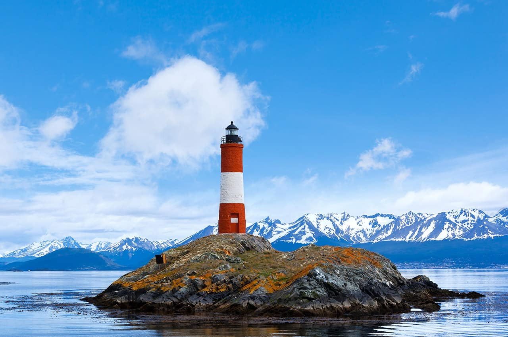

Ushuaia é uma cidade turística na Argentina. Está localizado no arquipélago da Terra do Fogo, a ponta mais ao sul da América do Sul - Também conhecida como Fim do Mundo
Ushuaia é uma cidade da Argentina e capital da Província da Terra do Fogo. É bem conhecida como a cidade mais austral do mundo ou a cidade do Fim do Mundo. Ela fica localizada a sudoeste da Ilha Grande da Terra do Fogo, no departamento de Ushuaia do qual a cidade de Ushuaia é capital. Um destino cada vez mais procurado pelos brasileiros, Ushuaia caiu nA neve é a grande atração entre os turistas e apaixonados por esportes de inverno. A temporada mais fria do ano em Ushuaia, que vai de junho a agosto, possui baixas temperaturas entre 2 °C até -20°C. Nessa estação, a região é muito visitada por possuir a estação Cerro Castor para a prática de ski e snowboard, e passeios como o trenó de huskies e andar nas motos de neve são os mais procurados pelos turistas no inverno.
No verão Ushuaia é caracterizado pela extensão do dia, com quase 18 horas de sol para os turistas poderem aproveitar todas as belezas e passeios que a cidade oferece ao máximo. As temperaturas ficam em média de 12 °C facilitando para quem quer visitar a cidade, mas não gosta de frios muito Geralmente quem viaja a Ushuaia acaba visitando El Calafate, pois, procura conhecer novos lugares e a viagem muitas vezes acaba se tornando mais atrativa devido aos passeios de aventura e de vistas espetaculares que El Calafate proporciona. É possível ver neve o ano todo na cidade, El Calafate possui 365 glaciares e são a grande atração para os apaixonados por neve, mas é o Glaciar Perito Moreno que possui mais de 70 metros de altura, o mais famoso.rigorosos. Uma das atrações do verão são os pinguins da Isla Martillo que podem ser visitados realizando o passeio do Canal Beagle com Pinguinera.o gosto dos turistas por ser uma cidade charmosa, com ótima culinária, povo receptivo e uma ótima estrutura turística, oferecendo passeios culturais e principalmente de ecoturismo e aventura.